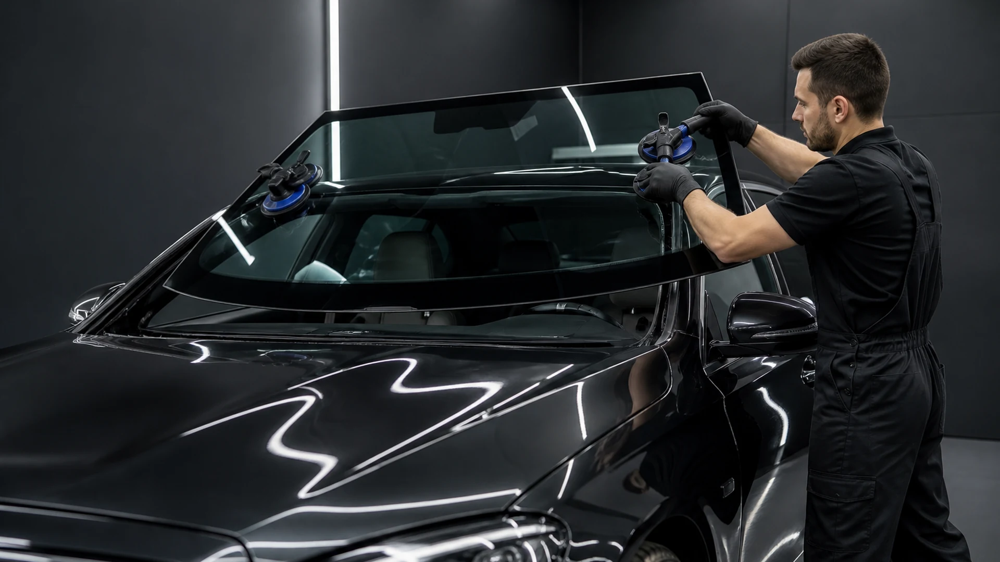
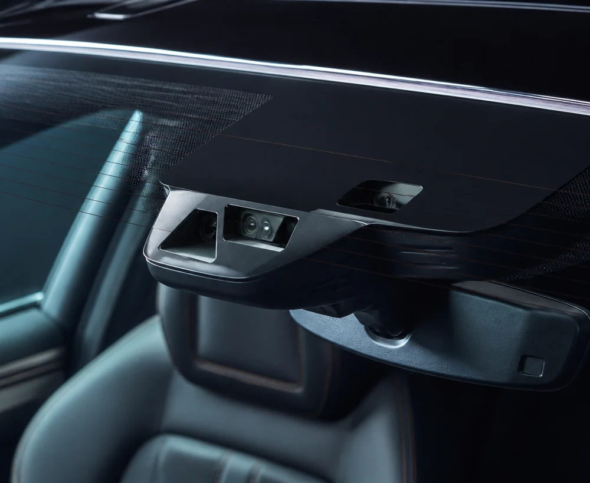
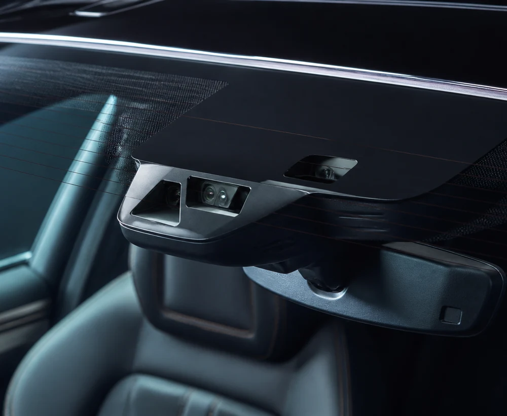
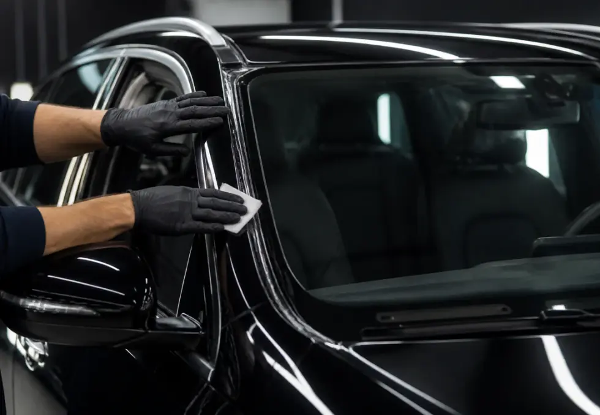
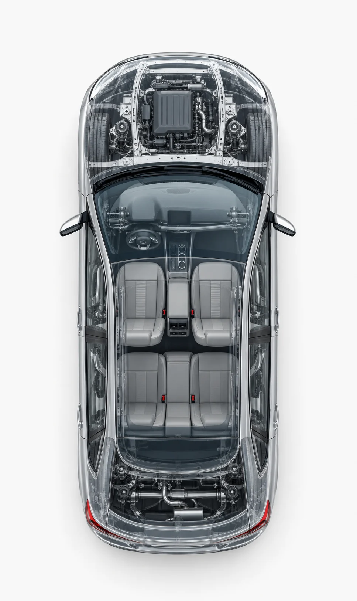
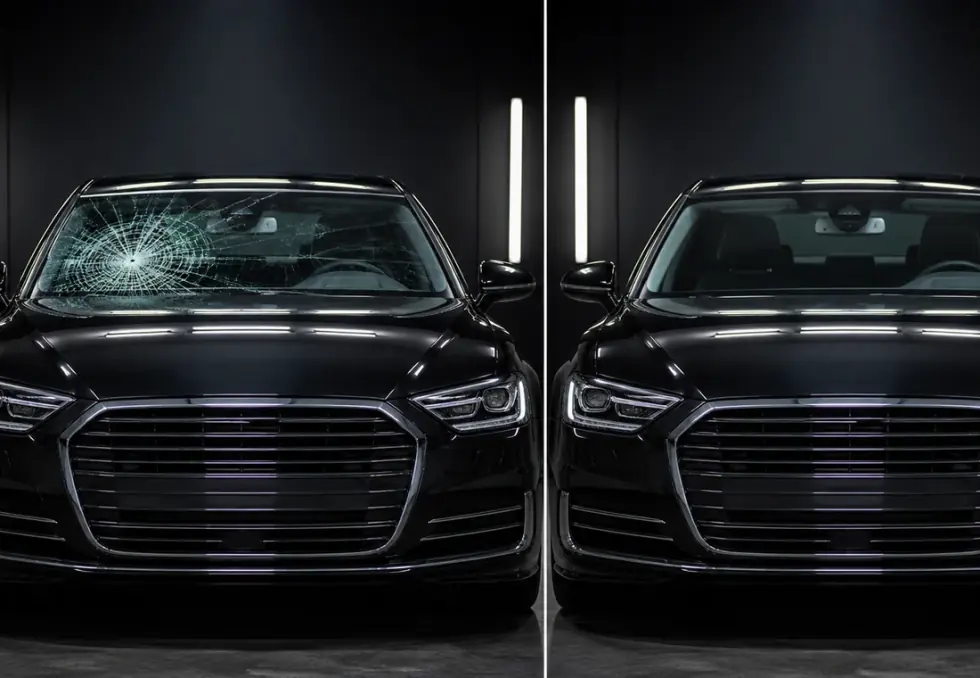
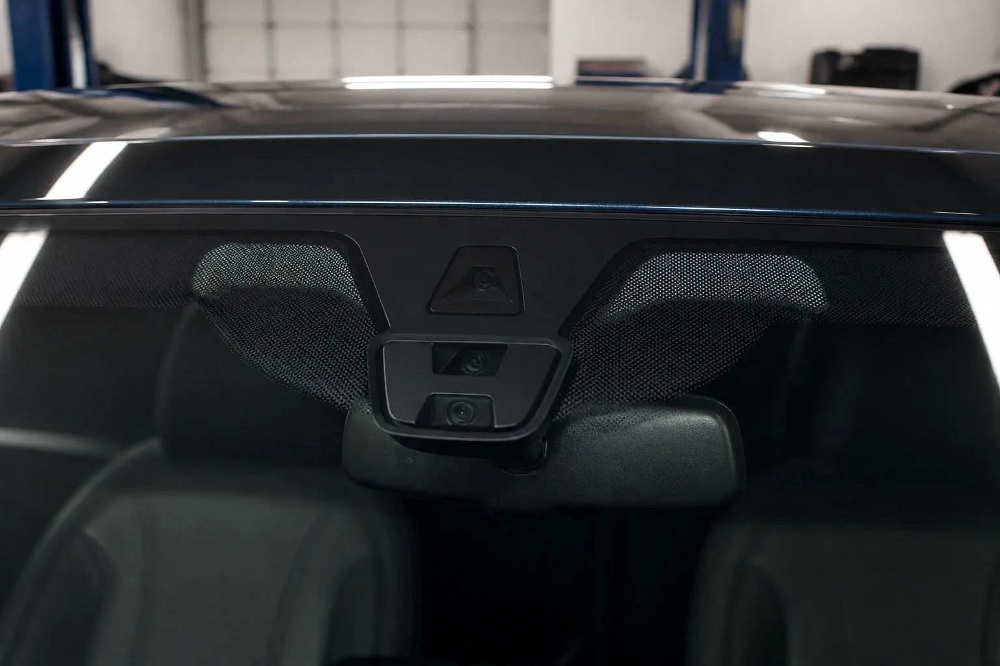
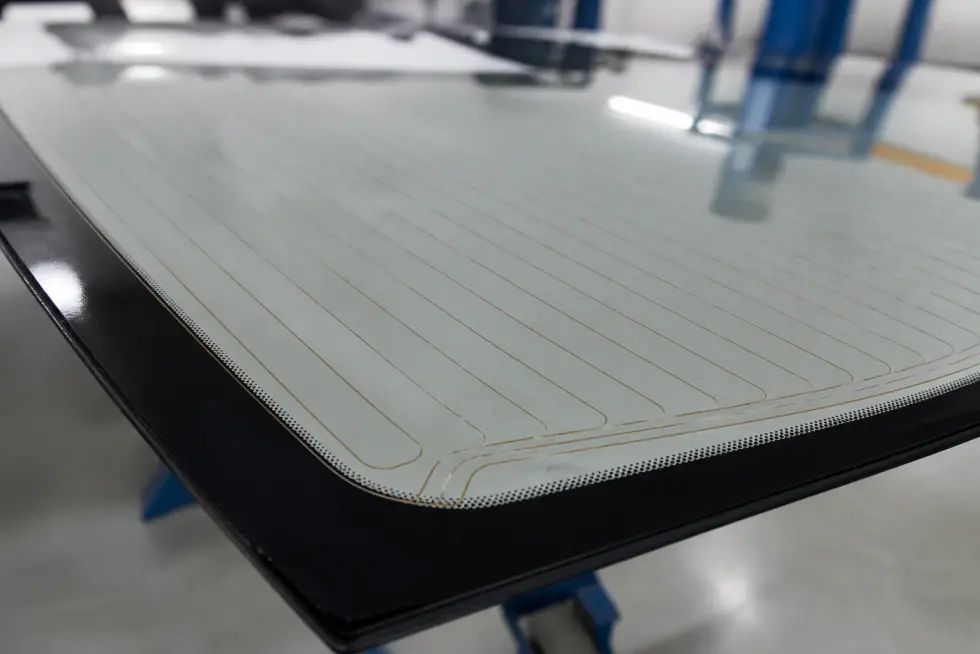
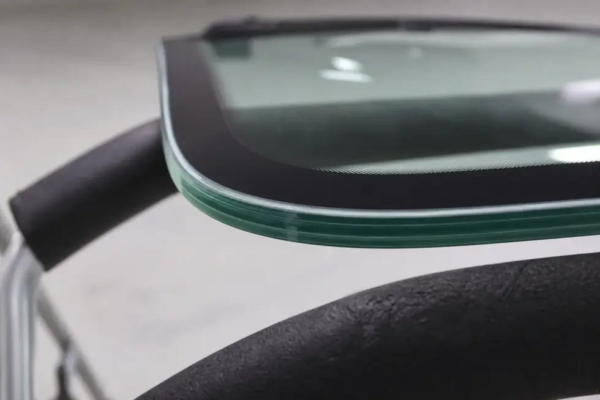
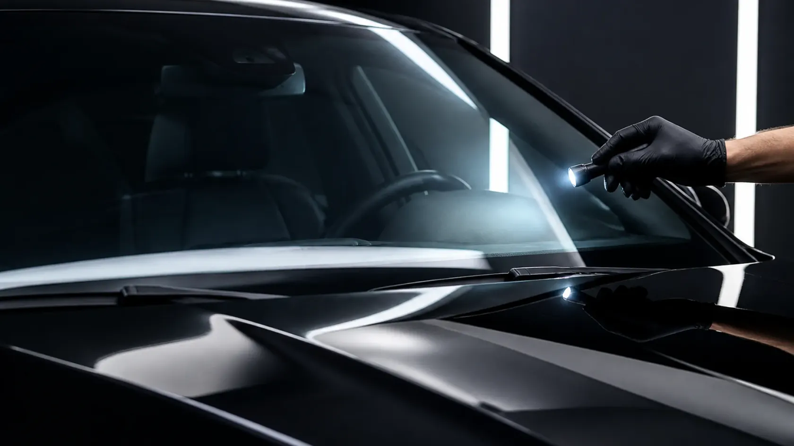

Precision Fit
New OEM-fit glass is set and bonded using automotive-grade urethane for a secure, factory-accurate fit.


Explore replacement when windshield damage is too extensive for repair or when the glass assembly needs to be renewed around vehicle-specific equipment.

Windshield replacement involves removing the existing glass and fitting a compatible new windshield into the vehicle opening using the appropriate installation system.
Modern windshields can support more than visibility. Cameras, heating, rain sensors, antenna elements and acoustic features may require a specific replacement specification.
Every replacement covers three essentials: the right glass fit, working camera and sensor systems, and a fully weatherproof seal.
New OEM-fit glass is set and bonded using automotive-grade urethane for a secure, factory-accurate fit.
Forward-facing cameras and sensors are recalibrated after replacement so driver-assist systems stay accurate.

Edge trim, mouldings and adhesive beads are fitted precisely to keep the cabin sealed against wind and water.


The finished windshield depends on more than the glass itself. The surrounding opening, adhesive system, trim and vehicle technology all matter.

Several kinds of damage or glass condition can lead to replacement being considered instead of local repair.

Extensive cracking can move beyond the kind of local damage normally associated with chip repair.

Large impact zones, multiple breaks or widespread damage can require replacement.

Damage close to the windshield perimeter may affect whether repair remains appropriate.

Significant damage in the primary driver sightline may lead to replacement being considered.

Damage around camera or sensor mounting zones can require additional replacement planning.

Delamination, severe scratching or other glass deterioration can also lead to replacement.
Modern windshield assemblies can include technology zones that should be considered when selecting replacement glass.

Many modern vehicles position forward-facing driver assistance cameras behind the upper central windshield area.

Vehicle application and windshield features are identified before replacement.

The surrounding mounting and bonding areas are prepared for installation.

Trim, visible fit and relevant vehicle systems are reviewed as part of the finished installation.
Select a feature to see why two windshields that look similar from a distance can still have different specifications.



Some windshields include a dedicated mounting and viewing area for forward-facing vehicle cameras.
The important part is not simply having new glass, but making sure the replacement suits the vehicle and the equipment around it.
Replacement should reflect the vehicle's required windshield specification.
Camera and sensor areas should be considered where the vehicle uses windshield-mounted technology.
The windshield should sit correctly within the surrounding body opening and trim system.
Final inspection should consider visible fit, trim and the driver's view through the new glass.
Useful questions to consider when researching a full windshield replacement.
Extensive cracking, significant impact damage, sensitive damage locations or glass that is otherwise unsuitable for repair can lead to replacement being considered.
Yes. Windshield dimensions, mounting features, tint, cameras, sensors, heating and other specifications can vary between vehicles and variants.
Camera-equipped vehicles can require compatible glass and may involve additional procedures. Confirm the exact requirements with the selected provider.
They can be. Heating elements may be incorporated into the windshield, meaning the replacement glass should match the vehicle's required specification.
Yes. Glass specification, installation details, warranties, technician credentials, insurance and final pricing should be confirmed directly before booking.

Tell us about the vehicle and windshield issue to start your replacement enquiry.
Send an enquiry